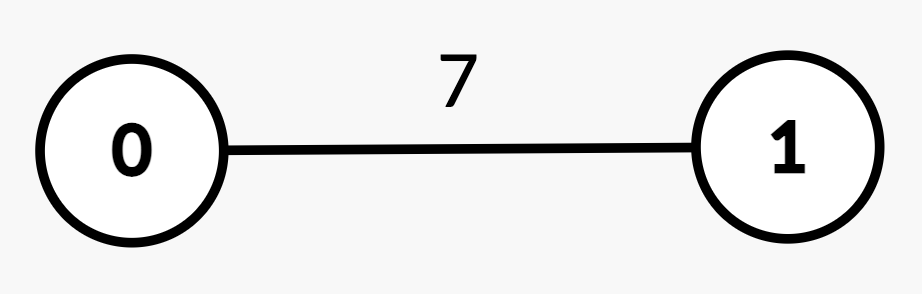
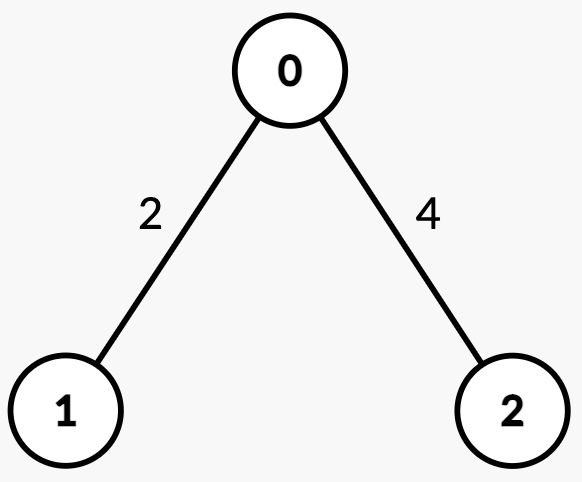
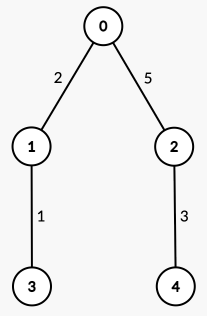

| Category | Difficulty | Likes | Dislikes |
|---|---|---|---|
| Algorithms | Hard | 67 | 5 |
array | binary-search | dynamic-programming | tree | depth-first-search
google
You are given an integer n and an undirected, weighted tree rooted at node 0 with n nodes numbered from 0 to n - 1. This is represented by a 2D array edges of length n - 1, where edges[i] = [ui, vi, wi] indicates an edge from node ui to vi with weight wi.
The weighted median node is defined as the first node x on the path from ui to vi such that the sum of edge weights from ui to x is greater than or equal to half of the total path weight.
You are given a 2D integer array queries. For each queries[j] = [uj, vj], determine the weighted median node along the path from uj to vj.
Return an array ans, where ans[j] is the node index of the weighted median for queries[j].
Example 1:
Input: n = 2, edges = [[0,1,7]], queries = [[1,0],[0,1]]
Output: [0,1]
Explanation:

| Query | Path | Edge Weights |
Total Path Weight |
Half | Explanation | Answer |
|---|---|---|---|---|---|---|
[1, 0] |
1 → 0 |
[7] |
7 | 3.5 | Sum from 1 → 0 = 7 >= 3.5, median is node 0. |
0 |
[0, 1] |
0 → 1 |
[7] |
7 | 3.5 | Sum from 0 → 1 = 7 >= 3.5, median is node 1. |
1 |
Example 2:
Input: n = 3, edges = [[0,1,2],[2,0,4]], queries = [[0,1],[2,0],[1,2]]
Output: [1,0,2]
Explanation:

| Query | Path | Edge Weights |
Total Path Weight |
Half | Explanation | Answer |
|---|---|---|---|---|---|---|
[0, 1] |
0 → 1 |
[2] |
2 | 1 | Sum from 0 → 1 = 2 >= 1, median is node 1. |
1 |
[2, 0] |
2 → 0 |
[4] |
4 | 2 | Sum from 2 → 0 = 4 >= 2, median is node 0. |
0 |
[1, 2] |
1 → 0 → 2 |
[2, 4] |
6 | 3 | Sum from 1 → 0 = 2 < 3.Sum from 1 → 2 = 2 + 4 = 6 >= 3, median is node 2. |
2 |
Example 3:
Input: n = 5, edges = [[0,1,2],[0,2,5],[1,3,1],[2,4,3]], queries = [[3,4],[1,2]]
Output: [2,2]
Explanation:

| Query | Path | Edge Weights |
Total Path Weight |
Half | Explanation | Answer |
|---|---|---|---|---|---|---|
[3, 4] |
3 → 1 → 0 → 2 → 4 |
[1, 2, 5, 3] |
11 | 5.5 | Sum from 3 → 1 = 1 < 5.5.Sum from 3 → 0 = 1 + 2 = 3 < 5.5.Sum from 3 → 2 = 1 + 2 + 5 = 8 >= 5.5, median is node 2. |
2 |
[1, 2] |
1 → 0 → 2 |
[2, 5] |
7 | 3.5 |
Sum from |
2 |
Constraints:
2 <= n <= 105edges.length == n - 1edges[i] == [ui, vi, wi]0 <= ui, vi < n1 <= wi <= 1091 <= queries.length <= 105queries[j] == [uj, vj]0 <= uj, vj < nedges represents a valid tree.